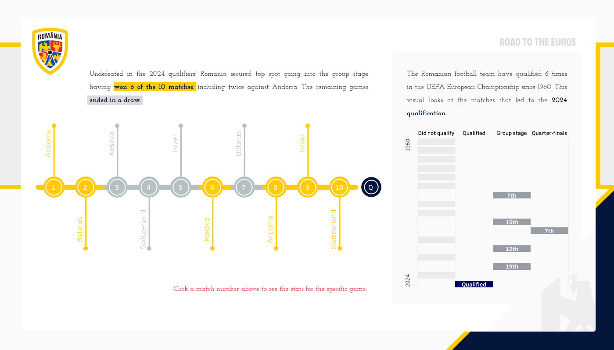
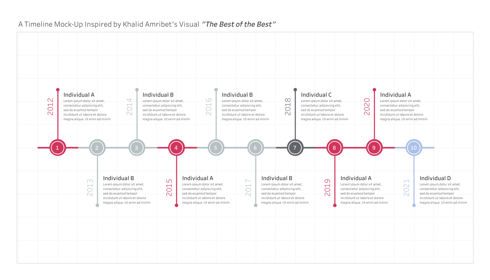
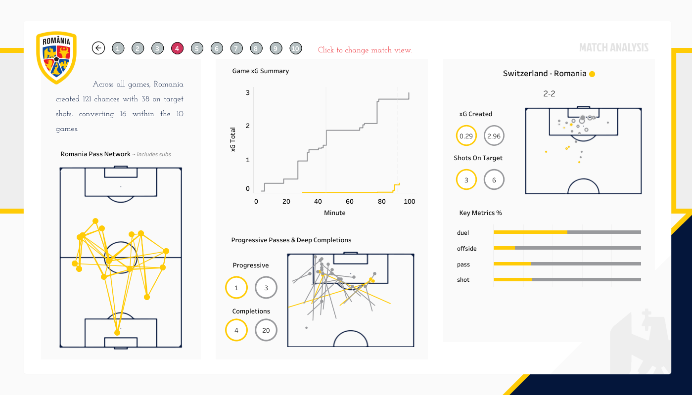
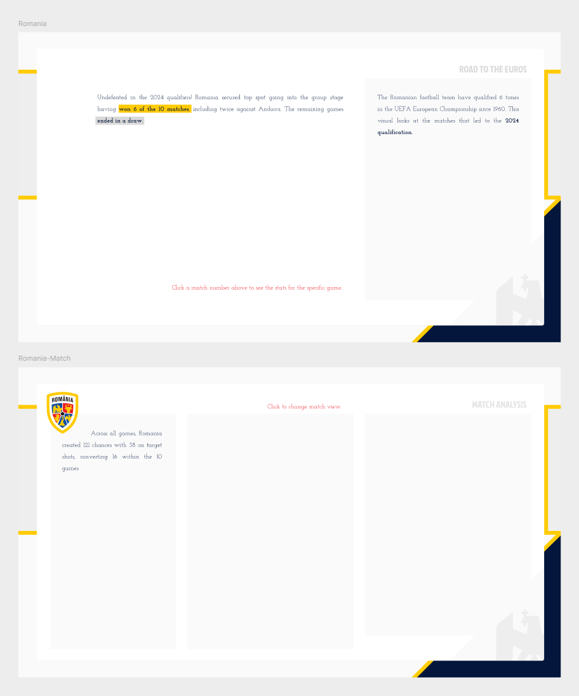
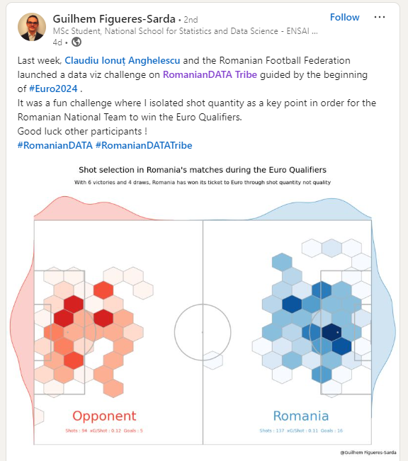
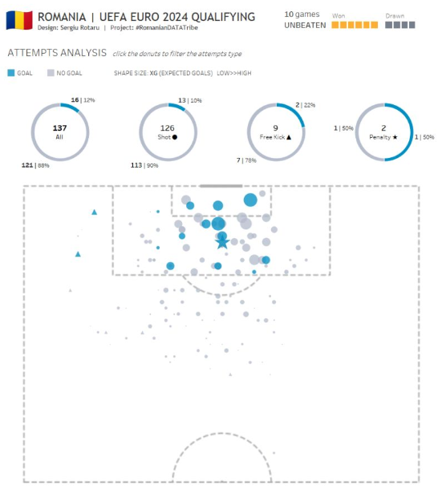

Hi all,
Last week I got tagged in a linkedin post from Claudiu Ionuț Anghelescu about soccer data available for their #RomanianDATA Tribe challenge.
It was a collaboration with Federatia Romana de Fotbal Intelligence Centre and Andrei Angelescu. Their aim to analyze the road of our national team that culminated in the qualification for the Euros 2024.
The challenge:
"Create your version of data visualization using the attached data source and/or additional data you want to explore from Flashscore, Transfermarkt GmbH & Co. KG, UEFA, Wyscout, etc.You can analyze the matches, the audience, the performance of the individual players or the entire team, the increases in market value of the players, the events during a match or the opponents of the Romanian national team."
I love things like this because unless you are coding savvy and can web scrape data, then you have to rely on paid memberships to soccer data.
I've re uploaded the datasets in the repo. They are a fantastic resource for those that want to experiment with different chart types.
Despite not being Romanian....I spent an evening entering out of support.

The first view is fairly simple. it is a timeline of the matches by game week using color to show the matches won, and grey to indicate the draws. So impressive that Romania won 6 of the 10 games to reach the group stages. This is the 6th time making the group stages, so added in the chart to the right hand side for context of highlighting what an exciting time it is.
I built a timeline template a while back but never ended up writing about it, you can find it here.

The second page to the view clicks through from the timeline and show the details for that specific match.
Mainly looking at attacking metrics such as xG, number of shots, number on target as well as some progressive or deep completions and then some possession type stats.
The game can be updated by clicking the grey match buttons to cycle through the different matches.

All the charts on this view have been created using logic from previous tutorials.
Plotting xgPass networksSoccer shot maps
The background is fairly static,
They were made in Figma. No doubt you could create this in PowerPoint it's nothing too extravagant. Just a few overlays. Originally I wanted to put some more images into it but was becoming quite the uphill battle of images vs statistics and only had the one evening to spend on it.
Below are a few other individuals whos work stood out to me from the challenge.
Firstly I came across this piece by Guilhem - The hex map really shows dominance in certain parts the pitch. The box area seems relatively mirrored for both teams but when you can see much greater differences in attempts when outside the box and attacking angles.

I also enjoyed this piece from Sergiu Rotaru - He use's just two colors to be able to distinguish easily the shots that have led to a goal. The part to whole ratio is very telling for looking at conversion %. Sergio's title and added context of number of games won / drawn adds cohesion to the piece whilst allowing for really only 1-2 charts being used!

Hope to see many others get involved in future and looking forward getting back into creating more sports analytics pieces again!
Wishing the #RomanianDATA Tribe team all the best with future challenges.
LOGGING OFF,
CJ